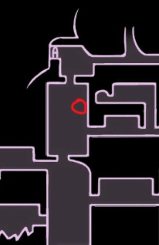

Objetos
Objetos varios
| Nombre | Descripción | Ubicación / Imagen |
|---|---|---|
Llave del comerciante | Pequeña llave de latón hecha a semejanza de un comerciante, dándosela a Sly desbloquea más objetos de su tienda. Se encuentra en Cumbre de Cristal, en la sala a la izquierda del banco donde está el Guardián de cristal. |  |
Fragmentos de vasija
| Descripción | Ubicación / Imagen |
|---|---|
| Las vasijas son útiles para almacenar alma sobrante cuando tu vasija principal esté llena, cuando gastes alma y se vacíe, el alma sobrante de las otras vasijas se desplazara a la principal. Las vasijas están esparcidas por fragmentos en todo el mapa, necesitas recolectar 3 de ellos para formar una sola y en total puedes tener hasta 3 vasijas |   |
| puedes encontrar uno de los fragmentos en la siguiente zona del mapa de sendero verde, hay una entrada en la parte de arriba despúes de terminar la zona de plataformeo, ésta entrada te llevara a un pasillo en dónde estará el fragmento. Requiere: Garra de Mantis. | .jpg) .jpg) |
| Este fragmento se encuentra en cruces olvidados, para llegar a él, primero debes desbloquear el elevador por medio de ciudad de lágrimas y despúes avanzar hacia la izquierda, en alguna zona de por abajo encontraras este fragmento | .jpg) .jpg) | Éste fragmento se encuentra en ésta sección de estación del rey. Al llegar te enfrentaras a algunos enemigos, después de vencerlos encontraras el fragmento hacia el lado derecho de la habitación |   |
Éste otro fragmento se encuentra en el nido profundo en ésta ubicación de aquí, tendrás que superar un pequeño circuito algo complicado. Al final de éste encontrarás el fragmento |  |
| El siguiente fragmento se encuentra en el nido de ciervos, una zona sin mapa a la que solo se puede acceder cuando ya has abierto todas las estaciones de ciervo disponibles en el juego |
Fragmentos de Máscaras
| Descripción | Ubicación / Imagen |
|---|---|
| Las máscaras son tu salud dentro del juego, cuando se te acaba la última pierdes. Al iniciar el juego comienzas tan solo con 5, pero puedes conseguir mas reuniendo fragmentos de máscara hasta completar una entera. Puedes conseguir un total de 4 máscaras extra, lo que significa que en total tienes 16 fragmentos que recolectar. | 
|
| El primer fragmento se encuentra en ésta sección de cruces olvidados. Despúes de pasar una zona de pínchos, en la que debes tener cuidado y siempre mirar abajo, llegaras con un jefe llamado "Mawlek Incubadora" al que deberás vencer para conseguir el fragmento | 
 |
| Hay otro fragmento que puedes encontrar en cruces olvidados justo en ésta parte del mapa, necesitas garra de mantis para poder subir, posteriormente deberás atravesar una pequeña secuencia de obstáculos y entonces conseguirás el fragmento. | 
 |
| El siguiente fragmento está también en cruces olvidados, para conseguirlo, necesitas rescatar a todas las 46 larvas, luego ir con el padre larva y entonces el mismo te dará el fragmento |  |
Amuletos
| Nombre | Descripción | Ubicación / Imagen |
|---|---|---|
Furia de los caídos.jpg) | Este es el primer amuleto que puedes conseguir al iniciar el juego, se encuentra en éste lugar de paso del rey. este amuleto aumenta el daño del aguijón en un enorme 75% cuando solo te queda una máscara | .jpg)  |
| Brújula caprichosa | Éste amuleto se consigue muy fácil, pues lo único que debes hacer es encontrar a Cornifer dentro de cruces olvidados, comprarle un mapa y luego subir a bocasucia, al regresar, su tienda estará abierta dónde te atenderá Iselda; su esposa, ahí podrás comprar éste amuleto. Su función es mostrar tu posición exacta en el mapa en tiempo real |  |
Enjambre recolector | Con éste amuleto la historia es muy similar. Debes encontrar a Sly en ésta sección de cruces olvidados y hablar con él para hacerlo salir de su trance, luego de eso regresará a su tienda en bocasucia dónde podrás comprarle el amuleto. Éste amuleto despliega unos pequeños bichos voladores que llevaran hacia a ti todo el geo tirado que haya cerca, perfecto si no te gusta desperdiciar ni uno solo |   |
Habilidades
| Nombre | Descripción | Ubicación / Imagen |
|---|---|---|
| Capa de polilla | Capa de polilla sirve para dar Dashes hacia adelante o atrás. Se consigue en ésta habitación de Sendero Verde después de derrotar a Hornet. |  |
| Espíritu Vengativo | El espíritu vengativo es un ataque lineal de largo alcance, se consigue al hablar con el chamán dentro del montículo ancestral. Hace 15 puntos de daño |  |
Mejoras del Aguijón
| Nombre | Descripción | Ubicación / Imagen |
|---|---|---|
Forjaguijones | Para que tu aguijón haga mucho más daño, necesitas mejorarlo, para eso solo debes de encontrar al forjaaguijones en éste lugar de ciudad de lágrimas hasta abajo a la izquierda. |  |
| Aguijón afilado | Para ésta primera mejora, lo único que necesitas es pagarle 250 geo al forjaguijones. Pasará de 5 a 9 puntos de daño. | |
Aguijón estilizado | Para ésta mejora necesitaras 800 de geo y 1 mineral pálido, puedes encontrar uno de éstos en ésta zona de cuenca antigua. El daño del aguijón aumentará a 13 puntos |   |